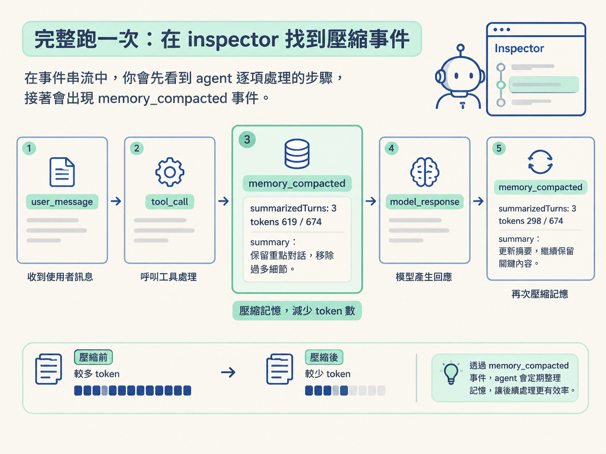
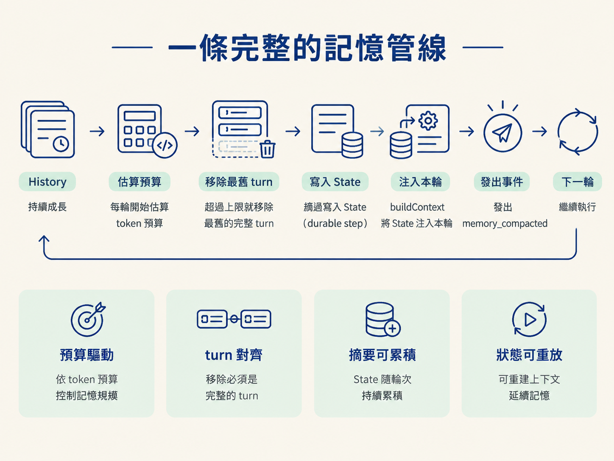

memory_compacted前幾步的壓縮結果都寫進了 durable event log。你如果直接重跑，看到的可能是上一輪留下的事件，很難判斷這次到底壓縮了幾次。這一步先把日誌清乾淨，再從頭跑一次，讓 memory_compacted 像被打亮的指示燈一樣，清楚出現在 inspector 裡。
你會用 clearEventLog 和 POST /api/clear（含 CORS）清空 durable 日誌，接著在 inspector 觀察 memory_compacted 事件的 summarized turns 與 token 數，並理解為什麼壓縮後的數字總是落在門檻略下方。
前面的壓縮會持續寫入 durable event log。每次重跑 demo，上一輪的內容也會留下來。想準確觀察「這一輪發生了幾次壓縮」，就要先把歷史歸零。
在 db.ts 加上一支 clearEventLog，直接清空 event log 表：
export async function clearEventLog() {
await db.execute(sql`TRUNCATE TABLE event_log`);
}這是純資料庫層的操作。把它 export 出去，讓 server 的入口檔和 ensureSchema 一起 import。它只有一個用途：重設 durable 狀態，讓你能從乾淨的起點重新執行與觀察。
清空動作會由瀏覽器介面呼叫 server。當介面和 server 不是同一個來源，就會遇到 CORS（跨來源資源共享）。
瀏覽器在真正送出 POST 前，通常會先送一個 preflight，也就是預檢用的 OPTIONS 請求。server 必須在回應中明確表示允許，真正的請求才會送出去：
app.use((req, res, next) => {
res.setHeader("Access-Control-Allow-Origin", "*");
if (req.method === "OPTIONS") return res.sendStatus(204);
next();
});CORS 中介層管的是「哪些非同一來源的客戶端可以存取這個 server」。少了這層，瀏覽器會在預檢階段就把請求擋掉；你甚至還沒看到 server 的錯誤訊息，請求就已經被攔在門外。
POST /api/clear有了清空函式，也允許瀏覽器跨來源呼叫，接著把操作接到路由：
app.post("/api/clear", async (_req, res) => {
await clearEventLog();
res.json({ ok: true });
});介面原本就有一個 Clear 按鈕，並且已經指向這個端點，因此前端不需要修改。這裡示範的是一個可重複使用的 harness 模式：把維運動作包成 HTTP 端點，交給 inspector UI 呼叫。清空日誌是其中一個例子，之後的審批操作也可以沿用同樣的方式。
重啟 server，確認沒有啟動錯誤後，按下 Clear，再貼上範例任務開始執行。
在 event 串流中，你會先看到 agent 一次處理一個項目。接著，memory_compacted 事件會出現。

每個事件都帶著幾個重要欄位：
| 欄位 | 範例 | 可以看出什麼 |
|---|---|---|
| summarizedTurns | 3 | 這次壓縮移除了幾個 turn |
| tokens | 619 / 674 | 壓縮前後的 token 數，確認內容確實變少 |
| summary | 一段精簡文字 | 摘要是否保留 ID、金額、已送事項等重要資訊 |
一場執行通常不只會壓縮一次。agent 持續工作時，token 數也會持續增加；每次跨過門檻，就會再壓縮一次。你會看到 壓縮反覆發生，這表示它是一個持續運作的機制，不是只在最後清理一次。
壓縮事件有時只會在畫面上快速閃過。這時回到 event log，就能找到完整的事件內容。
觀察事件時，你可能會發現：壓縮後的 token 數總是貼近限制下方，而不是等到大幅超標才處理。關鍵在第四步設定的執行順序：每輪迴圈一開始先檢查，呼叫模型之前才壓縮。
674 > 500。keepContextTokens（200）以下。因此，壓縮有兩個不同的控制點：
兩者之間的差距，就是每次壓縮預計清掉的量。課程使用的 maxContextTokens 500 和 keepContextTokens 200，是刻意調得很激進的展示值，不是生產環境建議值。實際系統通常會使用更大的門檻，但運作機制相同。
還有一個會影響觀察結果的控制項：摘要本身的輸出長度。
如果摘要沒有上限，它會慢慢吃掉剛剛省下的 context 空間。對 summarize 呼叫設定 maxOutputTokens，才能可靠地限制摘要大小。這比只在 prompt 裡請模型「寫短一點」更穩定。
現在整條流程已經串起來：
History 持續成長 → 每輪開始估算預算 → 超過上限就移除最舊的完整 turn → 摘要寫入 State（durable step）→ buildContext 將 State 注入本輪 → 發出 memory_compacted → 繼續執行

把這套設計放回自己的 runtime，例如 OryxOS 或 Java，需要替換的主要是 API 名稱。真正值得保留的是四個決策：預算驅動、turn 對齊、摘要可累積，以及狀態可重放。這些決策和使用哪一種語言無關。